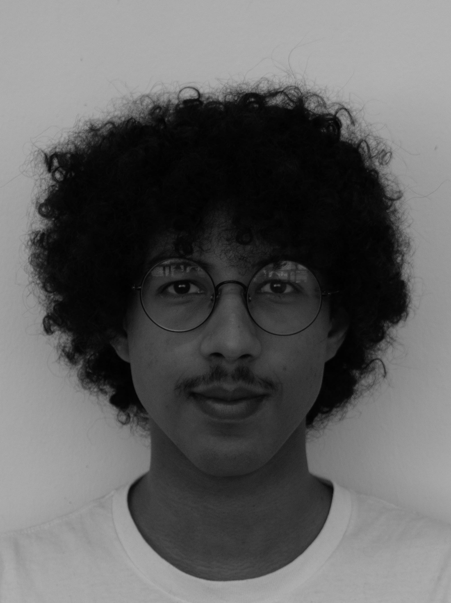

Meine architektonische Haltung bewegt sich an der Schnittstelle von Gestaltung, Atmosphäre und gesellschaftlicher Verantwortung. Architektur ist für mich nicht nur die Organisation von Raum, sondern auch ein Mittel, um Aussagen zu formulieren und Wahrnehmung zu prägen. Jede räumliche Entscheidung trägt Bedeutung in sich, sei es in der Wahl der Materialien, in der Form eines Baukörpers oder in der Art, wie Licht, Maßstab und Bewegung im Raum erlebt werden.
Gleichzeitig sehe ich Architektur immer im Dialog mit ihrem Kontext. Entwürfe entstehen nicht isoliert, sondern reagieren auf das, was ein Ort, eine Umgebung oder eine Gemeinschaft benötigt. Mich interessiert besonders, wie sich durch räumliche Setzungen Atmosphären erzeugen lassen, die über reine Funktion hinausgehen und einen eigenen Wert für die Lebewesen entwickeln, die sie nutzen.
Darüber hinaus begreife ich Architektur auch als politisches Feld. Gestaltung ist niemals neutral; Sie trifft Entscheidungen darüber, für wen Räume entstehen, wer sie nutzt und wie sie wahrgenommen werden. Diese Dimension bewusst mitzudenken ist für mich ein zentraler Teil des Entwurfsprozesses.
Mit Blick auf die Zukunft beschäftigt mich zudem die Frage nach Anpassungsfähigkeit. Unsere Gesellschaft verändert sich in immer kürzeren Zyklen, und Architektur kann nicht länger als statisches Objekt verstanden werden. Gebäude müssen vielmehr als Systeme gedacht werden, die Transformation zulassen, sich weiterentwickeln und auf neue Anforderungen reagieren können. In diesem Sinne interessiert mich eine Architektur, die sowohl atmosphärisch präzise als auch strukturell offen ist.